Installer Lanceur 308
avec Antigravity
Guide pas à pas, avec une démonstration réelle dans Antigravity (gratuit) sur une autre voiture
que la 308 : une Renault Clio 3 1.2 16V 75 ch essence de 2008.
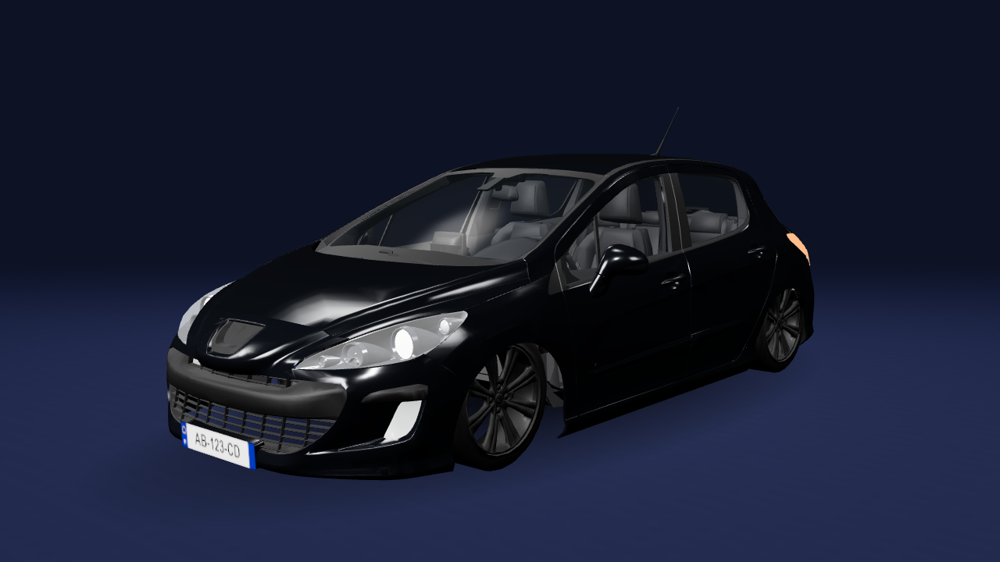
Ce que l'appli affiche sur l'autoradio (voiture en 3D, plaque d'exemple).
⚠️ Le réglage le plus important : dans Antigravity, choisis le modèle gratuit le plus récent
avec la réflexion au maximum, Gemini 4 Argon → High (étape 5). Avec un modèle moins réfléchi, l'IA se trompe
plus souvent et gaspille ton quota gratuit.
Il te faut
- un autoradio Android 8.0 ou plus récent et une clé USB ;
- un ordinateur (Windows 10/11, Mac ou Linux) et un compte Google pour Antigravity ;
- en option : un boîtier OBD Bluetooth (ELM327, Vgate vLinker MC+, iCar Pro) ;
- seulement pour adapter l'appli à ta voiture : Android Studio (gratuit).
Les étapes
- Installer Antigravity · 2. Récupérer le projet · 3. Choisir le modèle
- Les questions de l'IA et ses réponses (captures réelles)
- Installer l'appli sur l'autoradio · Premiers réglages · Dépannage
Démonstration faite le 10 novembre 2026 avec Antigravity 2.31 et Lanceur 308 version 0.25 (guide revu pour la 0.31 le 11 novembre). Les captures
d'Antigravity sont réelles (interface en anglais). Celles de l'autoradio viennent d'un émulateur Android 8 réglé comme un
autoradio (1024 × 600) : la voiture y est dessinée en 2D ; sur un vrai autoradio, elle est en 3D comme ci-dessus.
1. Installer Antigravity
1
Télécharge Antigravity sur antigravity.google/download, onglet de ton système (ici Windows), bouton
« Télécharger pour x64 ». Lance le fichier .exe et suis l'installation.
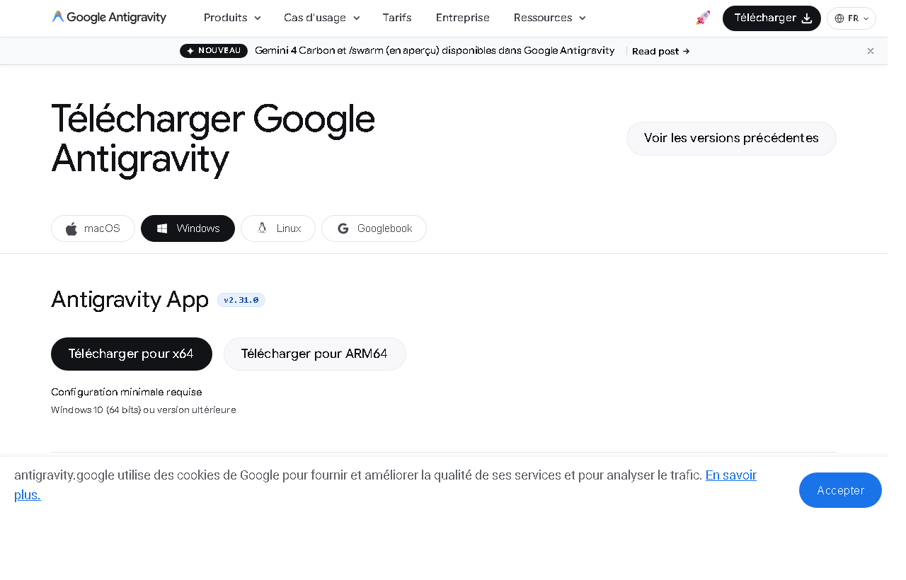
Page officielle de téléchargement. Le forfait gratuit (0 $) suffit ; il a des limites par semaine.
2
Ouvre Antigravity et connecte-toi avec ton compte Google (la connexion se fait dans ton navigateur). Quand il
demande ce qui décrit ton activité, choisis « Software Engineering » (Ingénierie logicielle), puis accepte les
conditions.
2. Récupérer le projet et l'ouvrir
3
Télécharge le projet : sur github.com/kylianprebost075-maker/lanceur-308, bouton vert « Code »
puis « Download ZIP ». Décompresse-le (clic droit → « Extraire tout ») dans Documents, par exemple.
Le bouton vert « Code » (entouré) ouvre un menu avec « Download ZIP ».
4
Crée un projet dans Antigravity : à gauche, à côté de « Projects », clique sur l'icône
« Create New Project » (un dossier avec un +), puis « Add Folder », choisis le dossier
lanceur-308 décompressé, et « Create ». Ouvre ensuite une conversation dans ce projet avec
« New Conversation », et garde « Local Checkout » (travail directement dans le dossier).
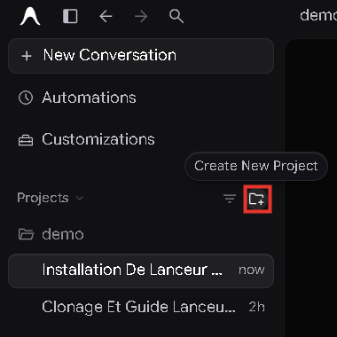
Capture réelle : le bouton « Create New Project » (entouré). Ici le projet s'appelle « demo ».
3. Choisir le modèle : Gemini 4 Argon, réflexion High
5
En bas de la zone de message, clique sur le nom du modèle (par exemple « Gemini 3.8 Flash »). Dans la liste,
passe la souris sur « Gemini 4 Argon » (le plus récent disponible gratuitement) sans cliquer :
un petit menu s'ouvre à droite.
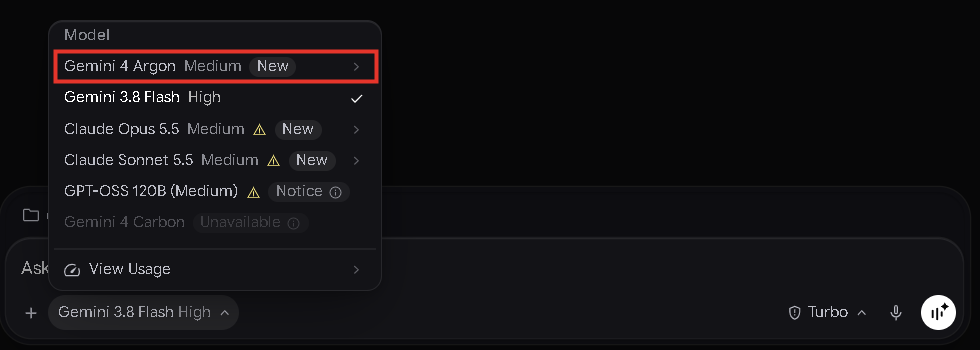
« Gemini 4 Carbon » est marqué « Unavailable » : il n'est pas inclus dans le forfait gratuit.
6
Dans le petit menu, choisis « High » : c'est le niveau de réflexion maximal. En dessous, le bouton doit
maintenant afficher « Gemini 4 Argon High ».
Si tu cliques directement sur « Gemini 4 Argon », il se met en Medium : rouvre le menu et
choisis High au survol. Si un modèle Gemini plus récent apparaît un jour sans la mention « Unavailable »,
prends-le, toujours en High.
4. Demander à l'IA de t'aider
7
Copie ce message dans la zone de saisie, vérifie le modèle (Gemini 4 Argon High), puis envoie avec la
flèche bleue :
Aide-moi à installer Lanceur 308 dans ma voiture.
Lis le fichier ADAPTER.md de ce projet et suis-le : pose-moi d'abord tes questions sur ma voiture.
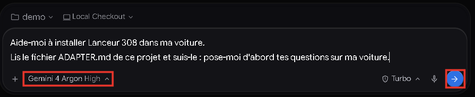
Capture réelle : le message, le modèle « Gemini 4 Argon High » et le bouton d'envoi (entourés).
8
L'IA lit ADAPTER.md et t'envoie toutes ses questions d'un coup (24 secondes dans notre essai).
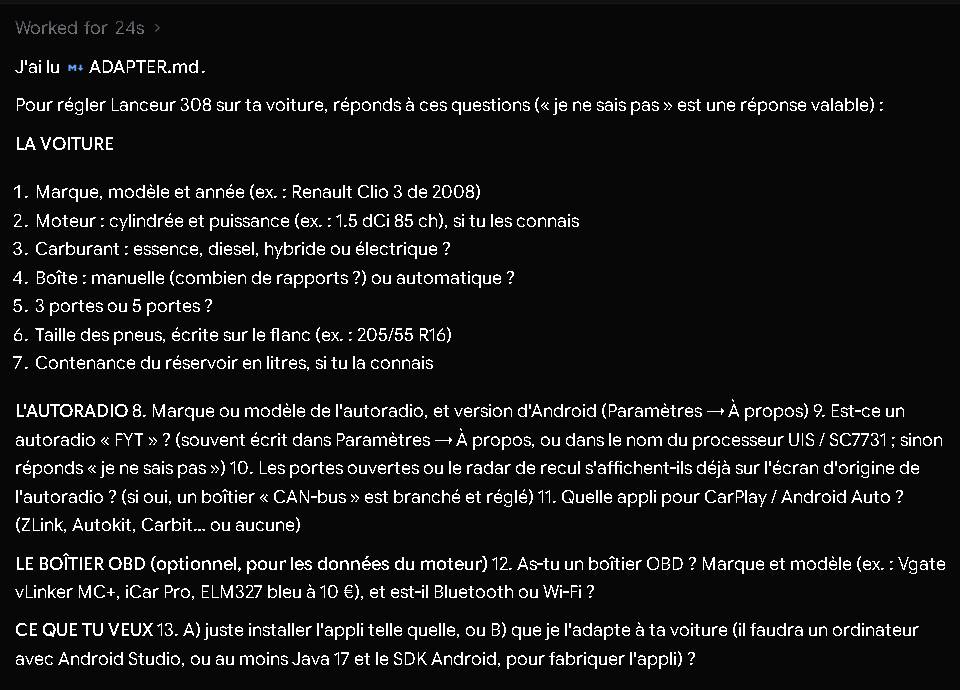
9
Réponds à tout dans un seul message, une ligne par question (« je ne sais pas » est une réponse valable).
À la question 13, réponds A pour juste installer l'appli, ou B pour que l'IA l'adapte à ta voiture.
Voici les réponses de notre exemple :
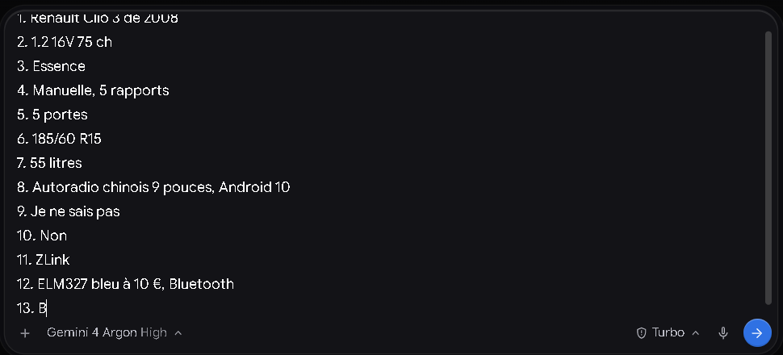
L'IA ne te demande jamais ta plaque, ton numéro de série (VIN) ni ton adresse. Ta plaque
se tape directement dans l'appli et ne quitte pas l'autoradio.
Pour la réponse B, il faut Android Studio sur l'ordinateur (gratuit, sur
developer.android.com) : installe-le et ouvre-le une fois avant d'envoyer tes réponses.
5. Ce que l'IA te répond
10
L'IA te fait une fiche « ce qui marchera chez toi ». Voici la vraie réponse de Gemini 4 Argon High pour la Clio :
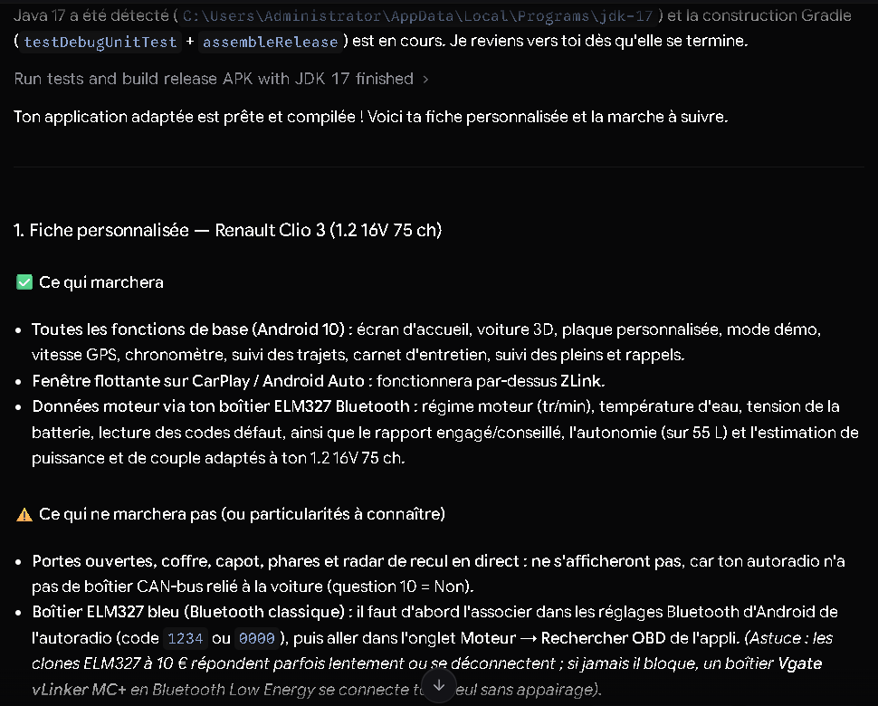
Elle prévient aussi de ce qui ne marchera pas : sans boîtier CAN, pas de portes en direct ; un ELM327
classique doit être associé (code 1234 ou 0000) ; filtre à particules et turbo sans objet sur ce moteur.
6. Option B : l'IA adapte l'appli
11
Avec la réponse B, l'IA modifie un seul fichier, CarProfile.kt (nom, moteur, couple,
rapports, réservoir), lance les tests puis fabrique l'appli. Dans notre essai : environ 3 minutes.
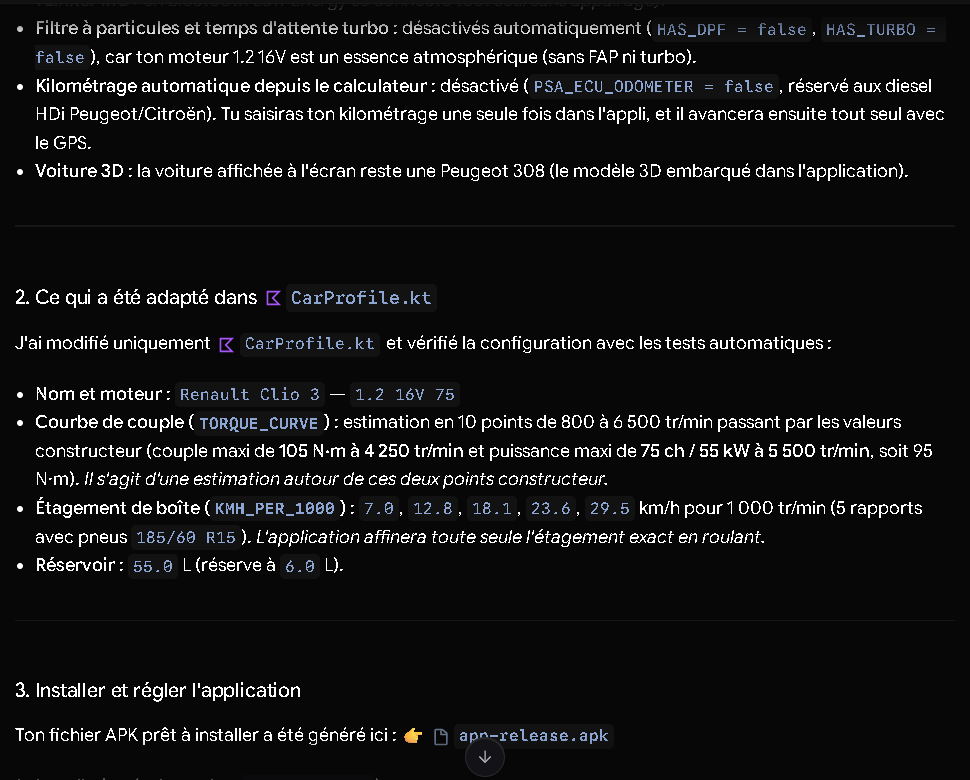
Vérifié après l'essai : un seul fichier modifié ; tests 16 réussis, 14 ignorés, 0 en
échec (les 14 tests ignorés concernent la Peugeot 308 de l'auteur : c'est normal) ; appli fabriquée
(17 Mo).
12
La fin de la réponse dit où se trouve l'appli fabriquée (app-release.apk) et quoi régler ensuite.
Si tu as répondu A, télécharge plutôt l'appli toute prête sur GitHub (étape suivante).
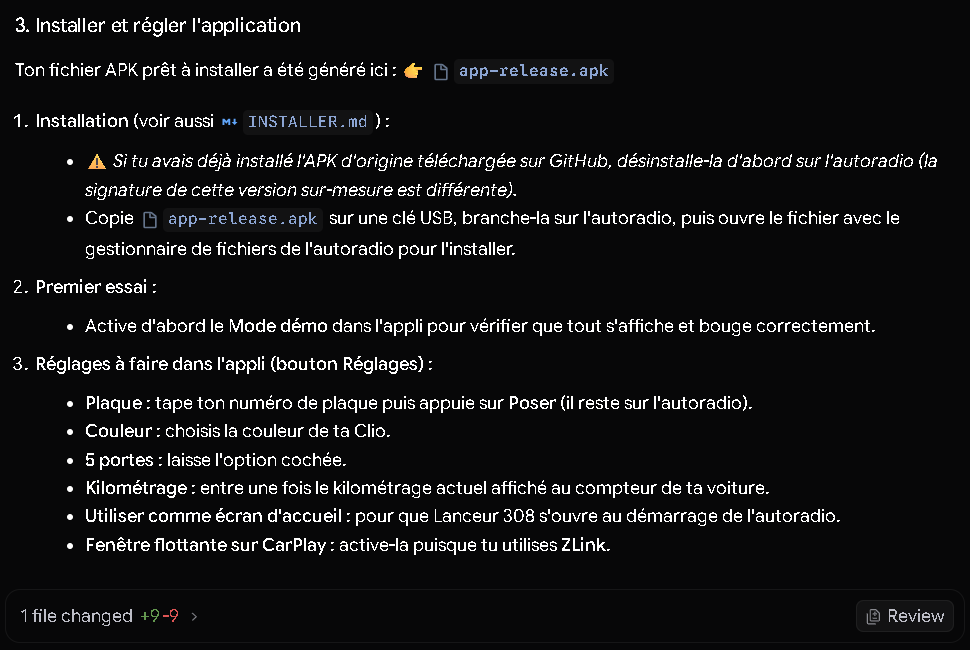
Le fichier se trouve dans projet/lanceur-308/app/build/outputs/apk/release/.
7. Installer l'appli sur l'autoradio
13
Récupère le fichier de l'appli : celui fabriqué par l'IA (option B), ou Lanceur308.apk sur la page
« Releases » du projet (option A). Copie-le sur une clé USB.
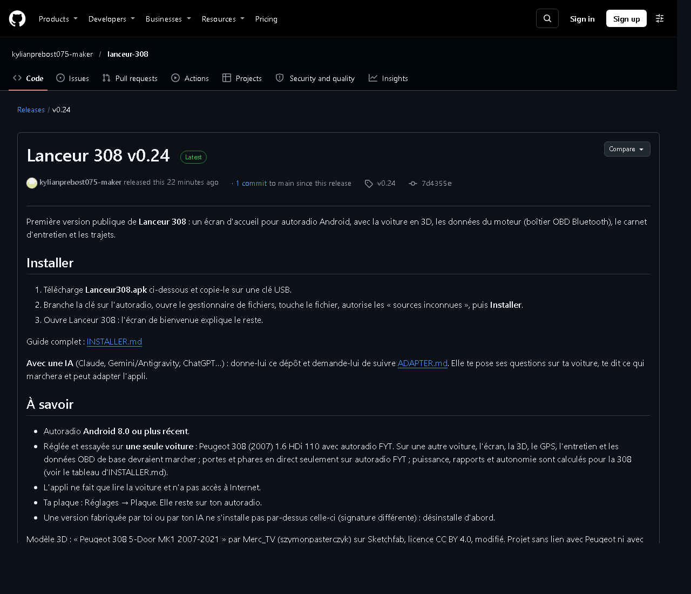
Option A : page « Releases » du projet, fichier Lanceur308.apk en bas de la page.
Une appli fabriquée par toi ne s'installe pas par-dessus celle de GitHub (signature différente) :
si l'autre est déjà installée, désinstalle-la d'abord.
14
Branche la clé sur l'autoradio, ouvre le gestionnaire de fichiers et touche le fichier.
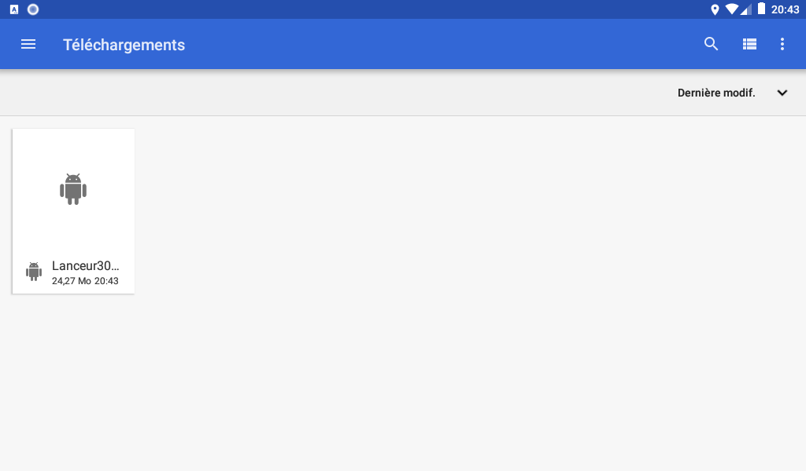
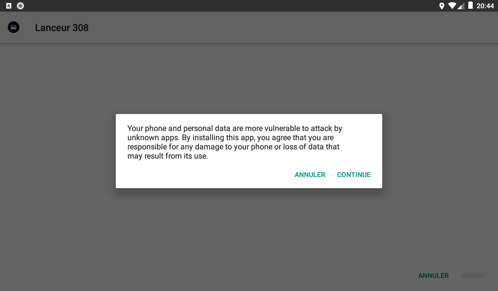
À droite : Android prévient que l'appli ne vient pas du Play Store ; touche Continuer. Selon
l'autoradio, il demande d'abord d'autoriser les « sources inconnues » : accepte.
15
Touche « Installer », attends quelques secondes, puis « Ouvrir ».
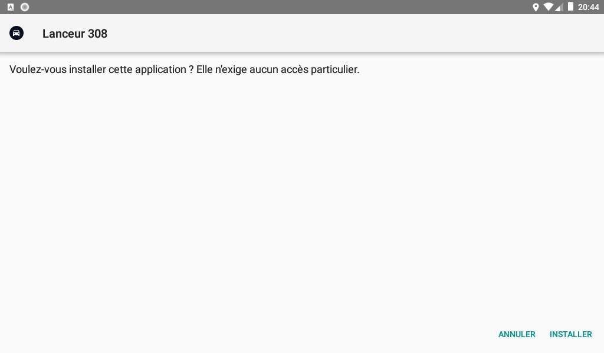
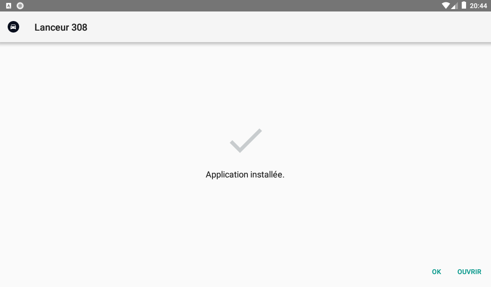
16
L'écran de bienvenue s'affiche une fois, avec la voiture pour laquelle l'appli est réglée (ici « Renault
Clio 3 1.2 16V 75 »). Touche « Voir la démo » pour tout voir bouger sans rien brancher, ou « Commencer ».
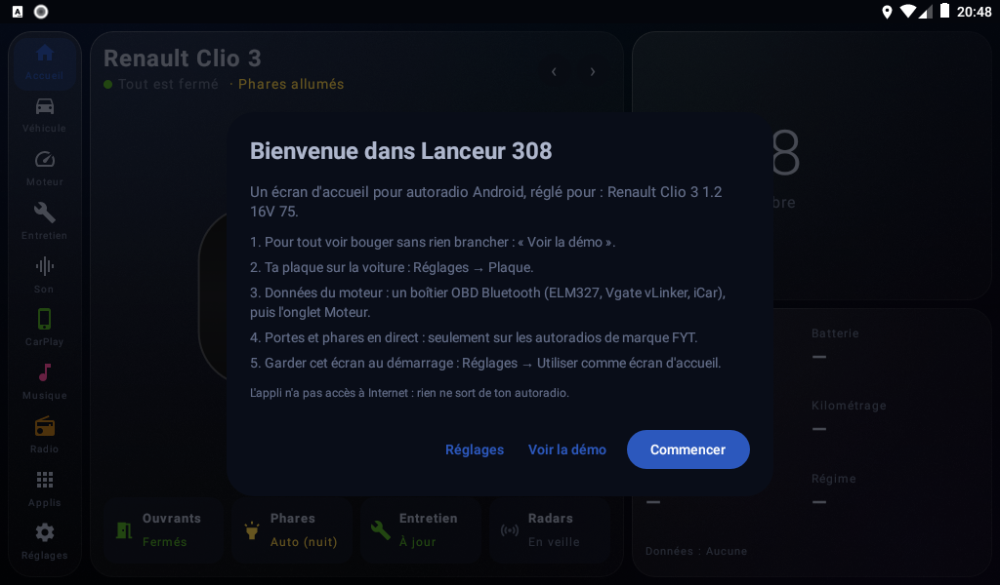
Android peut aussi demander la position (vitesse GPS, heure) et le Bluetooth (boîtier OBD) : accepte.
8. Premiers réglages
17
L'accueil affiche le nom de ta voiture. En mode démo, tout bouge. L'autonomie (540 km ici) est calculée avec le
réservoir de 55 L de la Clio.
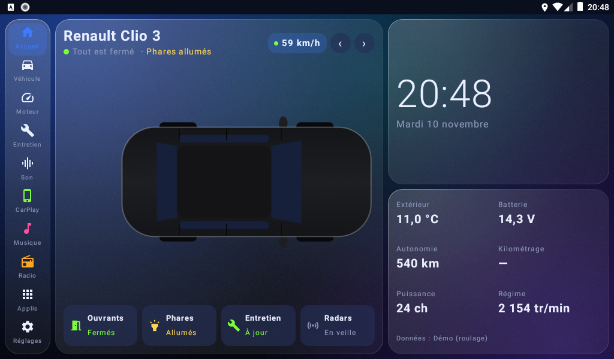
18
Réglages (en bas à gauche) → Plaque : tape ta plaque, l'aperçu se dessine, puis « Poser ». Règle
aussi le Kilométrage une fois, et coupe le Mode démo quand tu as fini de regarder.
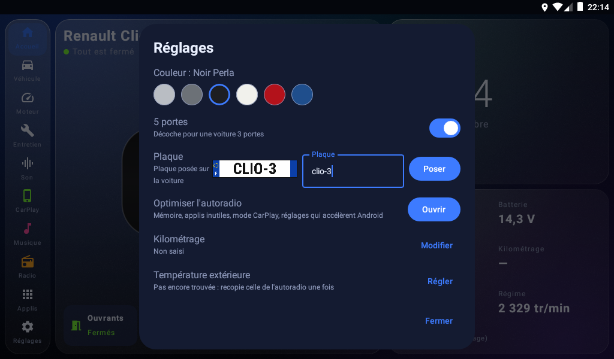
Plaque de démonstration « CLIO-3 » posée.
19
Dans la voiture, contact mis : onglet Véhicule → Mon autoradio (depuis la version 0.31). Chaque
information que ton autoradio transmet passe au vert (température, batterie, volume…). Une ligne grise dit quel geste
faire pour la tester : ouvre une porte, passe la marche arrière.
Si ça ne marche pas
| Problème | Quoi faire |
|---|
| L'IA répond n'importe quoi, ou explore tout le projet | Vérifie le modèle : Gemini 4 Argon High. Puis rappelle-lui : « Suis ADAPTER.md : questions en un seul message, un seul fichier à modifier, CarProfile.kt. » |
| Antigravity s'arrête : limite atteinte | Le forfait gratuit a des limites par semaine (menu du modèle → « View Usage »). Attends qu'elles se renouvellent, rouvre la même conversation et écris « continue ». |
| La fabrication échoue (« SDK location not found », « JAVA_HOME ») | Android Studio n'est pas installé, ou pas encore ouvert une fois. Ouvre-le une fois, puis dis à l'IA : « Android Studio est installé, réessaie. » |
| L'appli ne s'installe pas | Vérifie la version d'Android (8.0 minimum). Si une autre version de Lanceur 308 est déjà installée avec une autre signature, désinstalle-la d'abord. |
| Le boîtier OBD ne se connecte pas | Contact mis. Bluetooth classique : associe-le dans les réglages Bluetooth de l'autoradio (1234 ou 0000), puis onglet Moteur → Rechercher OBD. Le message de l'onglet Moteur dit où ça bloque. |
| Portes, température ou batterie n'apparaissent pas | Véhicule → Mon autoradio, contact mis : ce qui reste gris n'est pas transmis par ton autoradio (ou pas encore : fais le geste indiqué). Ne change pas le boîtier CAN dans le menu d'usine de l'autoradio s'il marche ailleurs. |
| Un problème dans l'appli | Laisse une clé USB branchée : l'appli y écrit un journal. Ouvre un ticket sur la page « Issues » du projet, sans publier le dossier entier (il contient tes trajets). |
Économiser son quota gratuit
- Une seule conversation du début à la fin, avec Gemini 4 Argon High.
- Réponds à toutes les questions en un seul message.
- Ne demande pas à l'IA d'« analyser le projet » : ADAPTER.md lui dit déjà tout.
- Option A si tu n'as pas besoin des calculs moteur exacts : une seule réponse de l'IA suffit.
Crédits
Modèle 3D : « Peugeot 308 5-Door MK1 2007-2021 » par Merc_TV (szymonpasterczyk) sur Sketchfab, licence
CC BY 4.0, modifié. Lanceur 308 n'est lié ni à Peugeot, ni à Renault, ni à Google, ni à un fabricant d'autoradio. La
Renault Clio sert uniquement d'exemple ; ses caractéristiques moteur sont des estimations de l'IA.
Projet : github.com/kylianprebost075-maker/lanceur-308